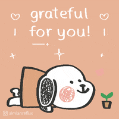

~~·̩̩̥͙＊˚*•̩̩͙✩•̩̩͙*˚ ★ ˚*•̩̩͙✩•̩̩͙*˚＊·̩̩̥͙ ~~
Hey! This website was created during August 2022 for Girls Who Code's Summer Immersion Program. I had so much fun exploring all the different ways to make my website unique to me and spent tens of hours outside of daily lessons to research cool features that weren't covered in class (my favorite is definitely flexboxes; I was very proud of my gallery page)! My hope is that this site will help you learn more about me and that the designs make your experience more immersive. Enjoy looking through the pages :)
gif by simian reflux